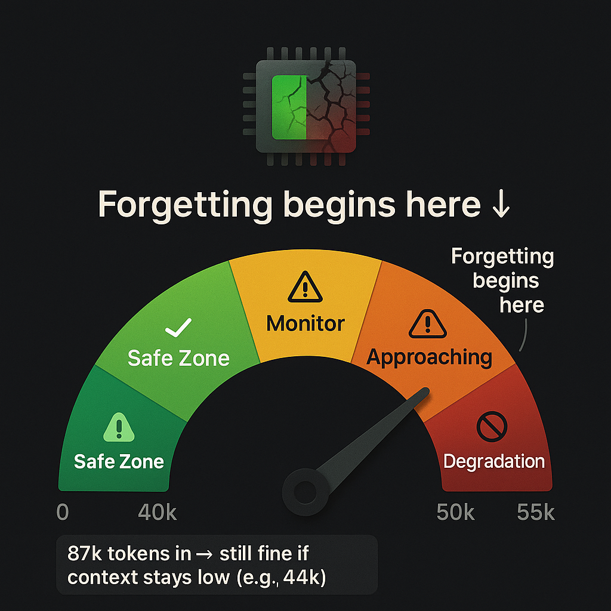

It was 2:13 PM on March 7, 2026, and my AI agent was acting off.
Responses were getting sloppy. Instructions from earlier in the conversation were being ignored. The agent that had been crushing multi-step deployments was suddenly missing obvious details and making weird mistakes.
Here is the embarrassing part: I did not even realize tokens and context could be different numbers. I knew they applied to different things conceptually, but I assumed they would scale together. If I used 200,000 tokens, I figured my context window would also be around 200,000.
Wrong.
The wake up call came when Qwen suggested something we were talking about would make a great "first article", except we had already written two articles. It mentioned both of them in the same session. That is when it hit me.
When I asked it to find the articles, it could, but only after going back and rereading instructions and raising the context window. The agent had literally forgotten what we had already built together.
My first assumption was token count. We had racked up 87,000 tokens in the session, and that number felt scary. I figured context and tokens went up at the same rate. They do not. Not even close. Especially if you build a dashboard like ours, which limits back and forth and keeps context window lower.
The moment of truth came when I checked the session status properly. The real metric that mattered was not the 87,000 tokens, it was the 44,000 context size.
Later, my agent and I did a test: we passed an outline back and forth using a test file, just sharing the pathway. We did 700,000 tokens worth of work with only 35,000 in context tokens. That is when it clicked.
Here is what I learned: tokens are history. Context is now. I was watching the wrong number.
The Discovery: 55,000 to 60,000 Context Is Where Forgetting Begins
After deliberately testing different context sizes, I found the threshold:
At 55,000 to 60,000 context, quality starts degrading.
Not a crash. Not a hard failure. Just gradual decay. The agent starts forgetting earlier instructions. Responses become less coherent. Tasks that should be simple suddenly require reexplanation.
The key distinction I missed:
Tokens in (87,000 in our session): cumulative throughput, total words processed. This is history, it does not directly affect performance. When you go this high, you must make sure prompts are super clear and direct. It is still workable, but it is safest to hit "new session" before 50,000. Doing that keeps everything smooth.
Context size (44,000 in our session): active working memory, what the model can actually see right now. This is what matters.
Tokens are like total bytes downloaded while you are browsing the web. Context is your RAM usage right now. You can download 100 GB over a day (tokens), but if your RAM hits 95 percent (context), everything slows to a crawl.
Safe operating zone: keep context under about 50,000. Yellow light at 45,000. Red light at 55,000.
What Degradation Actually Looked Like
I did not notice it immediately. That is the thing about context degradation, it is subtle.
The first sign is technically laziness. But here is the problem: it is not always easy to tell if it is genuine laziness, or if there is truly an issue with the tech.
Example: I uploaded an image and the agent told me it could not see it. Then it said if it tried hard enough, it could. It turned out there was a known image issue with Telegram that was crashing our system. The agent was making excuses for a technical limitation.
The agent did not crash. It did not throw an error. It just started forgetting.
- Instructions from 20 messages ago: ignored
- File paths we had established earlier: made up
- Multistep workflows: half completed
If you are not really paying attention, the early signs of degradation will go unnoticed until it gets so bad there is an epic screwup. And just to be clear: this is human user error, not the machine. It is important to understand the abilities and the limitations of your setup.
I tested it deliberately: pushed context to 40,000, then 45,000, then 50,000, then 55,000. The drop was real. At 55,000 and higher, responses became noticeably worse.
The scary part is that if you do not know what to look for, you would think the model itself was getting dumber. You would blame the AI. You would switch models. You would pay for a better plan.
But the model was not the problem. I was exceeding its working memory.
The Tokens vs Context Distinction (This Is the Important Part)

Let us make this crystal clear, because it took me way too long to figure out:
Tokens are history. Context is now. Watch the right one.
Here is the deal: 87,000 tokens in, 44,000 context is still fine, as long as Telegram errors do not derail the session. And you cannot allow too many errors in Telegram or it will take down the entire session. This is where the dashboard bypassing Telegram is key.
You can use as many tokens as you can afford to pay for, as long as you do not push the context window. And if you do what I did and create a system that auto saves in an emergency, you can simply start a new session and pick up where you left off.
Why Context Monitoring Should Be Day One
Here is what I should have done from the start:
- Monitor context size before every agent turn (not tokens, context)
- Set soft limits at 45,000; this is the best insurance policy you can have
- Hard cap before model limits; just because the model supports 128,000 does not mean you should use it
- Use compaction strategically: trim context while preserving token history
The better you are at reading the early signs, the smoother everything goes. As the agent degrades, user frustration increases. As the user gets frustrated, prompt clarity goes out the window, and that is when things get messy.
Do not let your context window go past 50 percent and this will never be a problem.
We did not do any of this. I learned the hard way.
Now context monitoring is baked into everything we build. It is day one infrastructure, not an afterthought.
The Dashboard Solution: How We Architected Our Way Out
The Problem That Started It All
Remember that 2:13 PM crash on March 7? Here is what actually happened:
What prompted the dashboard was when I tried showing Qwen three frontier AI models. They were claiming a link to our website was broken when it was not and could not count words in an article. Only Grok got it right.
When I went to share the four images with my agent to prove the point, I crashed our system.
That is when I realized we could use this dashboard to solve our Telegram HTTP 500 issue and our context issue at the same time.
This is solved by bypassing Telegram when we are doing tool calling. It is the tool calling that is crashing the Telegram API. That is a huge issue when you are in the middle of a project, so it only made sense to bypass Telegram.
When we did that, we had no errors, got a lot done, high token use and low context use. And it is a way to share information without adding token usage to the session that increases with every message. That information will not get read every message as it would have if sent through chat or Telegram.
In fact, my token usage is down 55 percent. That is partly because this is far more efficient, and we are not chasing Telegram bugs every five minutes. Now when I see Telegram errors, I laugh and say, "thank God for the dashboard."
It turned out to be a little of both: an image handling bug and a context degradation limit. Two separate problems, both very annoying. The best part is that with a clear head, the solution is simple.
Why We Chose Dashboard plus Firestore Over Debugging Telegram
We had a choice: spend hours debugging Telegram's image handling, or build something better.
We chose "build something better."
Telegram's limitations:
- Message length limits
- Image handling overhead
- No persistent session management
- Hard to track context size in real time
Dashboard advantages:
- Full control over upload handling
- Direct Firestore integration
- Real time session monitoring
- Clean separation of concerns
Here is another thing: frustration causes user degradation, which is just as bad as AI degradation. It leads to poorly written prompts and more confusion for both AI and human user.
The Hybrid Workflow (Best of Both Worlds)
We did not abandon Telegram. We just gave each tool the job it is good at:
- Telegram: quick commands, works on bad connections, instant access on your phone
- Dashboard: heavy uploads, session creation, file attachments, status monitoring
Philosophy: right tool for each job. Do not force one solution everywhere.
Dashboard Features (The "Smooth as Glass" Moment)
Here is what we built:
- Upload form: drag and drop files, images, text, with no Telegram size limits
- Project gallery: visual overview of all projects with status
- New Session button: clean context reset with one click
- Status button: real time tokens and context window tracking
- Firestore backend: persistent state, soft deletes, full audit trail
- Hybrid architecture: Telegram for chat, dashboard for heavy lifting
This is one more reason your AI agent should be connected to a database like Firestore.
How We Built It (Technical Breakdown)
No framework bloat. No overengineering. Just solve the problem:
- Frontend: vanilla HTML and JavaScript
- Backend: Node.js and Express server
- Database: Firebase Firestore (serverless, scalable)
- Auth: Firebase Admin SDK (service account)
- Deployment: Google Cloud Run (autoscaling, SSL)
- File storage: Cloud Run container uploads (simple, no extra services)
Key design decision: keep it simple. Solve the problem, do not try to build a startup.
The Build Process (Lessons Learned)
- Started with dashboard sandbox for testing
- Iterated on upload handling (file size validation, MIME types)
- Built soft delete system (48 hour retention, recoverable)
- Added real time status tracking (tokens, context size)
- Deployed to Cloud Run with custom domain
- Integrated with existing Firebase project
What This Solved
- No more HTTP 500 errors from images: dashboard handles uploads properly
- Context monitoring built in: Status shows real time context size
- Session management: New Session button for clean resets
- File persistence: everything stored in Firestore with metadata
- Hybrid flexibility: use Telegram for quick stuff, dashboard for heavy work
The Key Insight
Sometimes the fix is not tweaking the broken thing, it is building the right system.
Sometimes it is also a matter of learning how to use what you have built.
Instead of debugging Telegram image handling endlessly, we built a dashboard that does uploads properly. Instead of fighting context bloat, we built session management tools.
Architecture beats patches.
Session Reset Strategy plus Auto Save
The Auto Save Rule (Every 15 Minutes)
During active work, I now save progress every 15 minutes to memory/YYYY-MM-DD.md.
Why? Because sessions can crash. Context can degrade. And you do not want to lose hours of work.
What I save:
- Current state
- URLs and endpoints
- Pending tasks
- Errors encountered and fixes applied
This enables safe session restarts without losing work. It also prevents token bloat and hallucinations from long contexts.
When to Reset Session
The more information you have, the easier it is to make good decisions:
- Context approaching 45,000 (yellow zone)
- Starting a new major task
- After two to three hours of continuous work
- Before or after deployments
How to Reset Efficiently
- Save current state to memory file
- Note current status, URLs, and pending tasks
- Use /new or the New Session button
- Reload context from the memory file
- Verify session status (context should be under 5,000)
Token Burn Savings
Clean context means fewer tokens per response. No resending the entire history.
Here are the real numbers: last week I was at 90 percent of weekly token usage. This week we did 10 times more work and only used 44 percent of our weekly usage with 17 hours to go.
Typical savings: 60 to 80 percent token reduction per turn.
Cost impact: significant for high volume usage.
And honestly, I am running a huge model that is super efficient. Qwen 3.5, 397 billion parameters, which only runs at 17 billion. Honestly, it is the most impressive model I have used. I do not get paid to say that either, it is just that good.
Practical Takeaways (Checklist)
Monitoring Checklist
- ☐ Context size before each agent turn (stay under 45,000)
- ☐ Token count (does not matter, but good to track)
- ☐ Response quality (coherence, task completion)
- ☐ Gateway error logs (HTTP 500s, timeouts)
- ☐ Memory usage trends
Architecture Checklist
- ☐ Use dashboard for heavy uploads (images, files)
- ☐ Use Telegram for quick commands
- ☐ Store configs in Firestore (not just prompts)
- ☐ Implement auto save every 15 minutes
- ☐ Build session reset into workflow
- ☐ Monitor context size, not just tokens
The Numbers (For the Nerds)
Context Size Thresholds
Dashboard Tech Stack
- Frontend: vanilla HTML and JavaScript
- Backend: Node.js and Express
- Database: Firebase Firestore
- Auth: Firebase Admin SDK
- Deployment: Google Cloud Run
- Storage: container uploads
What Is Next
This article came from six hours of debugging and architecture redesign. It is real. It is tested. It works.
Article 4 in this series covers the Telegram setup, how we integrated it with the dashboard, webhook configuration, and why the hybrid model is the way to go.
Article 5 dives into AI orchestration, how we got it wrong four times before landing on the current architecture.
Support Independent Technical Writing
This is not generic AI slop. These are lessons learned from actually building and breaking things.
If this helped you:
- Buy me a coffee: https://buymeacoffee.com/DrVincentSativa
- Join the email list: get the "Context Monitoring Checklist" free download
- GitHub: dashboard code will be open sourced soon
🔑 Key Takeaways
- Tokens ≠ Context: Tokens are history (cumulative), context is now (active working memory). Watch context size, not token count.
- 55k is the breaking point: Quality degrades at 55,000-60,000 context size. Stay under 50,000 for safety.
- Dashboard solves everything: Bypassing Telegram for tool calling eliminated HTTP 500 errors AND reduced token usage by 55%.
- Auto-save every 15 minutes: Sessions can crash. Context can degrade. Save your work.
- Architecture beats patches: Don't debug broken things endlessly. Build the right system instead.
💡 What We Learned
Context window degradation is real, subtle, and easily confused with model stupidity. The agent doesn't crash or error—it just starts forgetting.
The solution isn't a better model or more tokens. It's monitoring the right metric (context size, not token count), building session management tools, and architecting systems that prevent the problem in the first place.
The dashboard we built to solve Telegram HTTP 500 errors turned out to be the perfect solution for context monitoring too. Sometimes the fix for one problem solves three others you didn't even know you had.